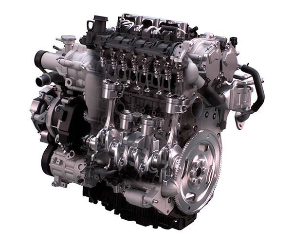

Motor de combustión interna

Motor de combustión interna
Es el corazón del automóvil. Funciona mediante la combustión de una mezcla de aire y combustible, que genera una explosión controlada para mover los pistones y producir energía mecánica. Los tipos más comunes son los motores de gasolina y diésel. Sus componentes principales son: bloque motor, pistones, cigüeñal, árbol de levas y válvulas.